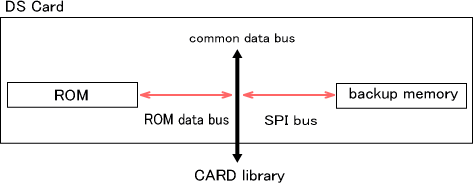

CARDライブラリはニンテンドーDS専用ゲームカード（略称：DSカード）を制御するもっとも低水準のインタフェースライブラリであり、
DSカード自体の排他制御とROMアクセス、バックアップメモリアクセス、ならびに抜け検出の機構を提供します。
ファイルシステムライブラリ(FS)など、DSカードを使用する上位ライブラリは内部でCARDライブラリを使用しています。
あらゆるCARDライブラリ関数の使用に先立ってあらかじめCARD_Init関数を呼び出しておく必要がありますが、
OS_Init関数を呼び出している場合はその内部で呼び出されますので、特にアプリケーション側で呼び出す必要はありません。
DSカードの構成
DSカードの内部ハードウェア構成について説明します。

DSカードはその内部に読み出し専用のROMデバイスを搭載し、さらに指定によっては1種類のバックアップメモリデバイスを搭載することがあります。
どちらのデバイスもメモリ空間にはマッピングされていないためこれらのデータへCPUから直接アクセスすることはできず、
データバスを経由して所定サイズ単位の転送コマンドを発行してアクセスする必要があります。
ROMとバックアップは共通のデータバスを使用します。データバスは同時に1個のデバイスからのみ使用可能で、デバイスがコマンドを処理している間は占有されます。
占有中のデータバスを解放したり競合して使用するとデバイスの動作が不定となりますが、CARDライブラリがこれをソフトウェアレベルで排他制御しているため、
プロセス間やモジュール間でカードアクセスに競合が起こっても問題となることはありません。
2006/01/06 初版